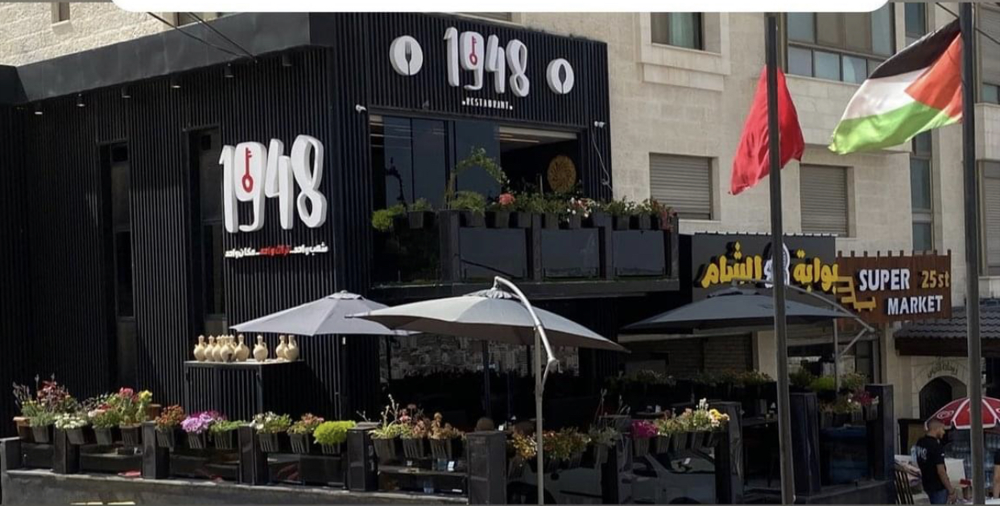

مرحباً بكم في مطعم1948
الوجهة المثالية لعشاق المطبخ الفلسطيني الأصيل والمتنوع
يقع مطعمنا في قلب نابلس، خلف الأكاديمية، أول شارع 25
يقدم مطعم 1948 تجربة طعام استثنائية تعكس التراث الغني والنكهات العريقة لفلسطين
نحن نفخر بتقديم مجموعة متنوعة من الأطباق الفلسطينية الشهية، المحضرة بأيدي أمهر الطهاة وباستخدام أجود المكونات الطازجة
من المسخن التقليدي والمقلوبة إلى الكنافة النابلسية الشهيرة
ستجدون في مطعمنا كل ما يسعد حواسكم ويأخذكم في رحلة لا تُنسى إلى عالم النكهات الفلسطينية. بالإضافة إلى ذلك، نقدم تشكيلة من الأطباق العالمية المتنوعة التي تلبي جميع الأذواق
لا يقتصر سحر مطعم 1948 على الطعام فحسب، بل يمتد ليشمل الأجواء الودية والخدمة الممتازة التي نقدمها
فريقنا الودود والمحترف يسعى دائماً لضمان رضاكم ويستقبلكم بابتسامة وترحيب حار
مما يجعلكم تشعرون وكأنكم في بيوتكم
تفضلوا بزيارة مطعم 1948 واستمتعوا بتجربة طعام فريدة تجمع بين الأصالة والتميز
دعونا نأخذكم في رحلة طهي ساحرة تملؤها النكهات الرائعة وحسن الضيافة الفلسطيني